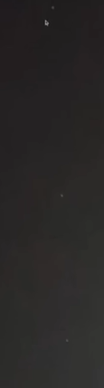
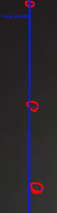

Zdjęcie pokazane powyżej zostało wykonane przez Makajlera.
UFO drobińskie, to rzekomy incydent pojawienia się wcześniej wspomnianego UFO, tuż nad domkiem Holenderskim(w mieście Drobin).
Wedłud wielu teorii 3 obiekty pokazane na powyższych zdjęciach, to Starlink, jednak dr. hab. Makajler twierdzi inaczej.
Według niego niemożliwe jest, aby 3(na zdjęciu. Łącznie 4) obiekty ustawiły się pionowo.
Na zdjęciu widać wyraźną strukturę statku UFO(podłóżny, niski spodek).
Chwilę, po pokazaniu zdjęć Makajler zaczął słyszeć "świsty".
Miał on teorie, iż owe świsty to język kosmitów.
Wedle tej teorii UFO, które pokazało się w Ameryce było prawdziwe.
przerażona twarz doktora po owym incydencie.